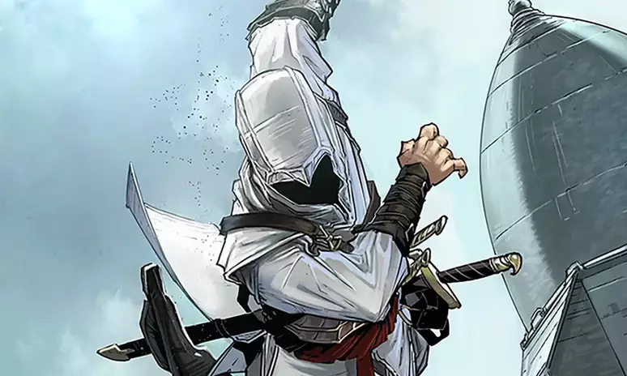
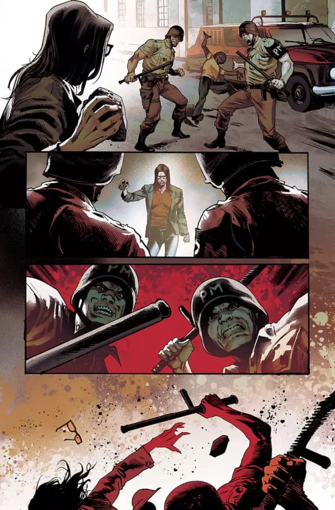

Assassin's Creed: Ditadura brasileira dos anos 1970 vai aparecer na série
Ambientação faz parte de Assassin's Creed Visionaries, série de quadrinhos que será lançada em novembro
Com publicação prevista para novembro, Assassin's Creed Visionaries é uma série de histórias em quadrinhos baseada na popular franquia da Ubisoft, e sua primeira edição será ambientada durante a ditadura brasileira na década de 1970.
Na primeira edição de Assassin's Creed Visionaries, os leitores poderão acompanhar um combatente revolucionário lutando durante a brutal ditadura brasileira da década de 1970, sendo capturado e enviado para um local militar secreto conhecido como Salas de Tortura. A história é escrita por Ale Santos, com desenhos de Rafael Albuquerque e Marcelo Maiolo como colorista.
O escritor Ale Santos é de Cruzeiro, São Paulo, e é conhecido por escrever livros livros e histórias sci-fi e fantasia afro-americanada, como a obra O Último Ancestral. Já Rafael Albuquerque, natural de Porto Alegre, trabalhou como desenhista em várias editoras, incluindo a DC Comics, com trabalhos em Besouro Azul, Batman e Superman. Atualmente, o artista trabalha na conhecida série Vampiro Americano, escrita por Scott Snyder e Stephen King.
Esta edição também traz uma segunda história, ambientada em um futuro próximo e com outros personagens, com roteiro e arte de Stéphane Louis e da colorista Vera Daviet.
Em Assassin's Creed Visionaries, vários artistas de quadrinhos conhecidos foram convidados para criar e compartilhar sua visão pessoal da franquia, criando seus próprios assassinos, adicionando assim novos rostos para o mundo criado pela Ubisoft.
De acordo com a editora Massive Publishing, cada história em Visionaries contará com novos assassinos nunca antes vistos em quadrinhos, jogos ou outros lugares.
Assassin’s Creed Mirage, o próximo jogo da franquia, será ambientado na cidade de Bagdá e tem lançamento marcado para 12 de outubro nas plataformas PC, PS4, PS5, Xbox One e Xbox Series X/S.
https://htmlpreview.github.io/?https://github.com/rodrigoxal/ProfXavierWeb/blob/main/index.html